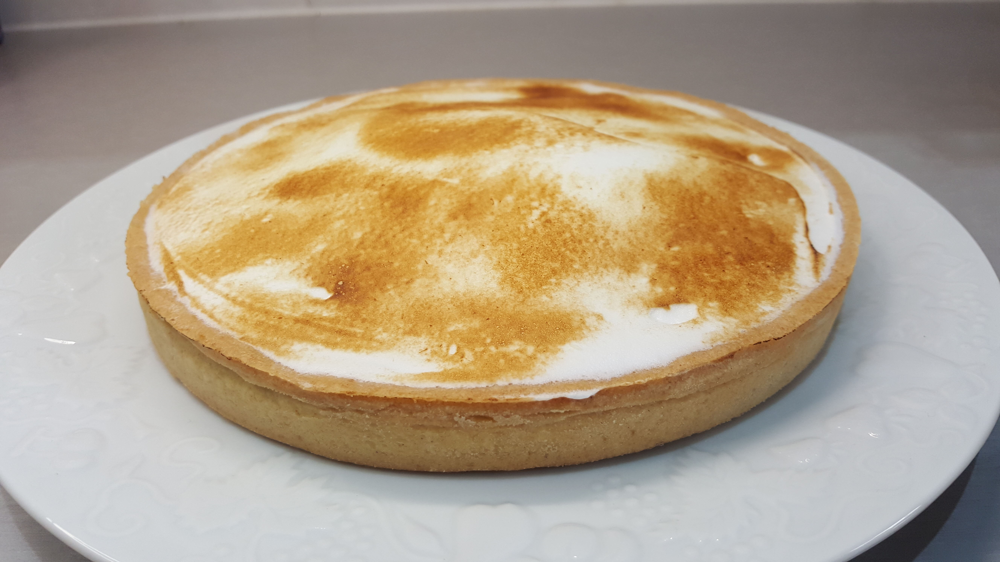

Tarte au citron meringuée

Le blog de pâtisserie pour gourmands
La tarte au citron est un de mes desserts préférés.
Une amie (coucou Corinne ) a voulu me partager sa recette de crème citron sans beurre. Après un premier essai très réussi, je vous conseille de l'essayer. De plus, elle est très facile à réaliser si l'on ne fait pas la merigue qui est plus technique. Pour cette tarte j'ai fait une pâte brisée comme je les aime, croquante et peu sucrée.
Pâte brisée
Crème citron
Meringue italienne
Four: 170°C
Temps de cuisson : 25 minutes
Temps de préparation : 2 h
Conseil : Préparer votre fond de tarte la veille et pour cela sortir votre beurre 2h avant la préparation de la pâte brisée.


Pâte brisée
Dans un récipient mélanger les farines, le sel et le sucre.
Ajouter le beurre mou en petits morceaux. Avec le bout des doigts presser le beurre dans la farine puis sabler le mélange entre vos mains.
Ajouter l’œuf battu et amalgamer le mélange assez rapidement pour éviter que la pâte devienne élastique. Fraiser la pâte avec la paume de la main en 3 ou 4 fois. Faire une boule et l’aplatir légèrement, recouvrir de film alimentaire et mettre la pâte au réfrigérateur 45 minutes.
Sortir la pâte du réfrigérateur et l'aplatir avec un rouleau à patisserie sur un plan de travail fariné.
Mettre votre pâte à tarte dans un moule à tarte qui aura été préalablement beurré et fariné.
Pour éviter que la pâte gonfle à la cuisson, piquer la pâte avec la pointe d'un couteau et couvrir la pâte avec des haricots blancs ou des billes en céramique spéciales fond de tarte.
Cuire le fond de tarte au four à 170°C / 20 à 25 min, puis laisser refroidir.
Crème citron
Presser les citrons, passer le jus de citron dans une passoire et récupérer le jus dans une casserole.
Chauffer le jus de citron jusqu'à un léger frémissement.
Dans la cuve d’un robot verser les œufs et le sucre. Fouetter vitesse 5 jusqu’à ce que le mélange double de volume et blanchisse.
Dans la cuve ajouter la maïzena, fouetter à nouveau.
Ajouter le jus de citron chaud et fouetter encore à grande vitesse. Laisser monter encore la crème.
Verser dans une casserole, fouetter sur le feu jusqu’à ce que le mélange épaississe. Quand de petites bulles commencent à remonter mettre hors du feu ajouter la crème fleurette et fouetter à nouveau.
Verser la crème citron sur le fond de la tarte froide.
Meringue italienne
Mettre le sucre et mouiller avec de l’eau. Cuire le sucre jusqu’à 117°C ou petit boulet.
Pendant que le sucre cuit, fouetter les blancs d’œuf jusqu’à ce qu’ils soient légèrement mousseux.
Verser le sucre cuit sur les blancs d’œufs en fouettant à petite vitesse. Puis fouetter à grande vitesse.
Montage de la tarte au citron
Sortir la tarte au citron du réfrigérateur. Avec une spatule lisser la meringue sur la crème citron. Le conseil de Philippe Conticcini est de faire un dome de meringue pour avoir une plus grande épaisseur de meringue au milieu pour la coupe de la tarte. Cela afin d’avoir en première bouchée une belle quantité de sucre qui tapisse le palais cela atténuera l’acidité du citron pour la suite de la dégustation.
Passer la tarte sous un grille jusqu’à coloration mais seulement quelques minutes (1 à 2 minutes) pour ne pas cuire la crème citron ou au chalumeau. Cela permet de faire crouter la meringue et lui donne une belle couleur caramel.

Bonne dégustation !!!